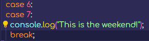
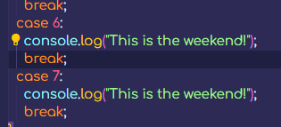

So now the Switch statement, this seems slightly intimidating and I'm not fully sure if that's because it's currently 00:53 or because this just seems like a slightly more in depth topic. It looks hard to understand but simple at the same time it's quite confusing.
The Switch statement seems pretty interesting however, Colt says that it isn't commonly used. Though looking it up, from what I can see is that people are saying it's a good alternative than having multiple if statements.
Here is a good source that will be helpful. I'll probably look into these a little more myself when I find some good use cases for them. I've had a little more time to have a look at them and honestly they don't seem that bad, it's just an alternative way to using IF statements, they're wrote differently but they seem to give the same outcome.
The one thing that does confuse me though is that I'm not sure how to use the combinator operators with this. Other than that it seems fine to me. Apparently in the real world this statement isn't as common as things like "Typical", "Conditional", IF and IF ELSE. (Not sure if Typical or Conditional are different from the IF or IF ELSE statements but I'll leave them here for now.)
Getting into how the Switch statement works, requires a few different pieces of syntax, just like an IF statement has it's own syntax. There's the keyword which is "switch", the next being "case". But then there's a few other words which are "break", and "default" but I'm not sure if these are classed as keywords just yet.
I've also linked up another script to this document to help with understanding this concept. I made an example within the file of switch-statement.js and I created the example with IF statements first. Though in this case it would be better to use a Switch statement due to just checking one value against others.
Think of it when comparing, here's a case not the object case like brief case but think of it like a file report for the police, does the case match the description of the case that you have for a value? No? Then move onto the next case. And do this until you either find a matching case or until you get to the ELSE equivalent (which is default instead of case).
When creating a switch statement, if the statement doesn't use the keyword "break" it will continue running the code. To put this into perspective think about using the example in the attached script file. Imagine if the value of day was 1, well without a break anywhere it will run the code from the matching 1 case. With this example it would be "Today Is Monday", but it wouldn't stop there, it would print out every other case as well.
That's where the break keyword comes in. Before the case clause is closed, putting the keyword break at the end of that clause on a new line from the rest of the code, it will stop running the code there and won't print anything else out in this case.
I've copied the code I had already which didn't have the break keyword in and pasted it further down into the file and made it it's own example. The case will run until it either runs out of code to run and then move onto the next case or it will stop after it reaches a break.
With the example I have when the switch finds the value of the variable it uses. day in my example if the value matches one of the cases for instance value 1 would match with the case that has value 1. When this happens the case will then run through the code within it's clause, which would be to print something out in console and then it would stop because there's a break there.
However, with the extra example I made with the day2 variable instead of having the code stop because of the break. It would just continue until it runs out of cases. For example if the day2 variable value was 3, then it would skip both the first and second case due to them being 1 and 2 respectively. Meaning the switch statement would run the code and print out the String for case 3 because that's what my code does, but this code could be anything. But then it would move onto the next case being case 4 and continue until case 7 because there's no breaks within that example. Unless I put one in for testing purposes.
The final piece of the puzzle would be the alternative to the ELSE statement, or basically the catch all statement. The way to do this would be to structure it like the case but instead of using the keyword case, the keyword would be default. Like this is the default route for anything else. And then the cases again being a specific case like a police case etc.
So when getting some input that doesn't match any of the cases it will get the default code clause that will be the catch all. Running that default code clause instead.
Interesting so when if there's a situation where two cases can have the same output, them both run the same exact code. Instead of writing out duplicate cases, I can just write this:  compared to this: 
These aren't as common as using IF, ELSE IF and ELSE but there are some use cases, in a sense of cleaning the other statements up in being a bit cleaner. But also having a bunch of different things to compared to, this can be better for that though, a lot of the time the logic doesn't fit the situation.